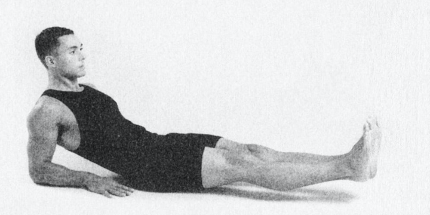
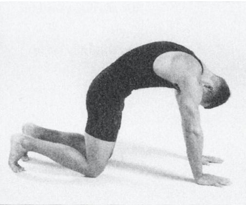
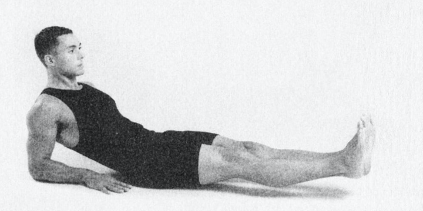
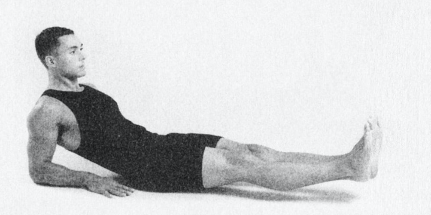
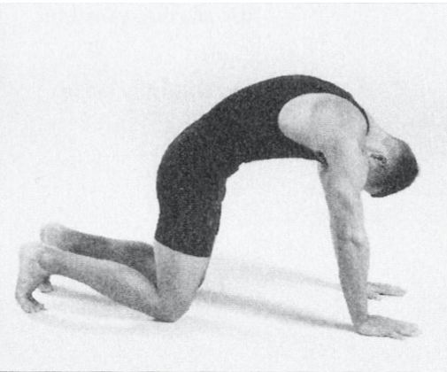
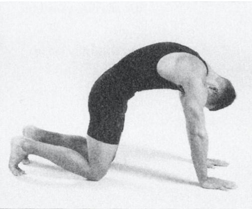
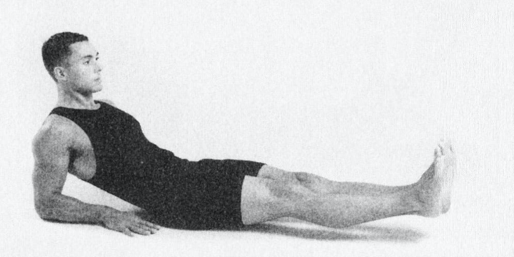
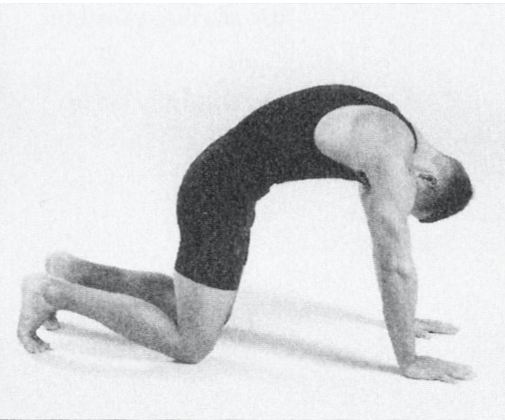
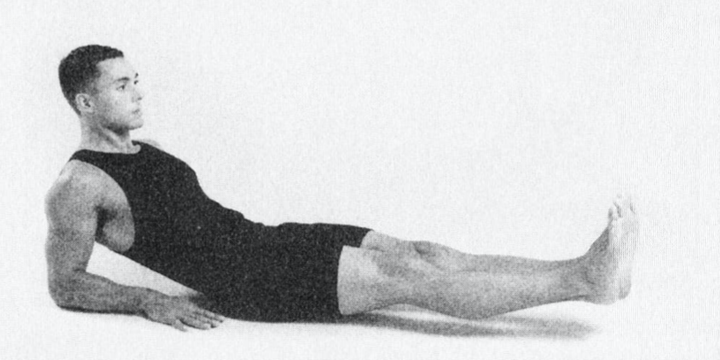
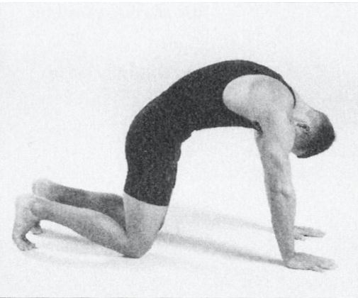

The Tibetian Rites
First week:
Perform each rite three times, once a day.
Then each week fpr nine weeks:
add two more repetitions.
At the end of nine weeks:
21 repetitions of each.
It's best to do this in the morning.
Warm-up Exersizes


The Five Rites


 

 



 


